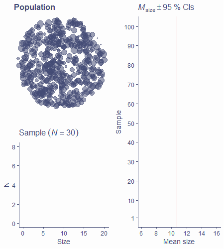
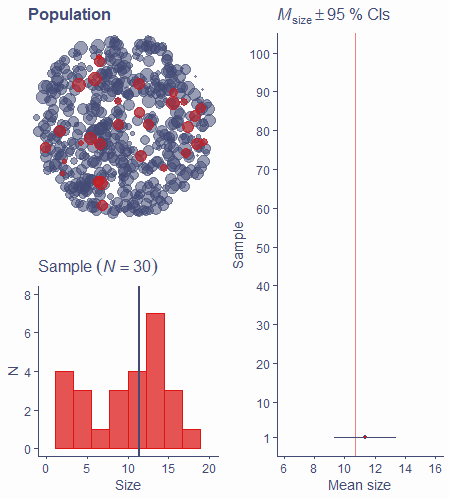

Best guess and uncertainty
Analysing Data
Before we begin
Any questions about last week’s content?
Today
- Point estimates vs interval estimates
- Confidence intervals
- t-distribution
What stats is about
- We want to know about the world (population)
- We can only get data from samples
- We calculate statistics on samples and use them to estimate the values in population
- Statistics is all about making inferences about populations based on samples
- If we could measure the entire population, we wouldn’t need stats!
Point estimates
- You’ve heard of the sample mean, median, mode
- These are all point estimates - single numbers that are our best guesses about corresponding population parameters
- Measures of spread (SD, variance, etc) are also point estimates
- Even relationships between variables can be expressed using point estimates
Accuracy and uncertainty
- Sample mean \(\bar{x}\) is the best estimate \(\hat{\mu}\) of population mean but means of almost all samples differ from population mean \(\mu\)
- Same is true for any point estimate
- SE of the mean expresses the uncertainty about the relationship between sample and population means
- SE can be calculated for other point estimates, not just the mean
- We can quantify uncertainty around point estimates
Interval estimates
- In addition to estimating a single value, we can also estimate an interval around it
- e.g., mean = 4.13 with an interval from −0.2 to 8.46
- Interval estimates communicate the uncertainty around point estimates
- Important – confidence intervals
Confidence interval
- We can use SE and the sampling distribution to calculate a confidence interval (CI) with a certain coverage, e.g., 90%, 95%, 99%…
- For a 95% CI, 95% of these intervals around sample estimates will contain the value of the population parameter
- Let’s see an example
Confidence interval
- Population of circles of different sizes

Confidence interval
- Sample from population, estimate mean size

Confidence interval
- Calculate the 95% CI around the mean

Confidence interval
- ~5% don’t contain population mean – 95% coverage

How is it made?
- Easy if we know sampling distribution of the mean
- 95% of sampling distribution is within ±1.96 SE
- 95% CI around estimated population mean is mean ±1.96 SE
How is it made?
- Sampling distribution of the mean is normal (as per CLT)

How is it made?
- Middle 95% of the sample means lie within ±1.96 SE

How is it made?
- We use the same 1.96 SE to construct 95% CI around mean

How is it made?
- Sampling distribution is, however, not known!
- It can be approximated using the t-distribution and s and N
t-distribution
- Symmetrical, centred around 0
- Its shape changes based on degrees of freedom
- “Fat-tailed” when df = 1; identical to standard normal when df = \(\infty\)

t-distribution
- As shape changes, so do proportions (unlike with normal)
- In standard normal, middle 95% of data lie within ±1.96
- In t-distribution, this critical value changes based on df

t-distribution
- t-distribution pops up in many situations
- Always has to do with estimating sampling distribution from a finite sample
- How we calculate number of df changes based on context
- Often has to do with N, number of estimated parameters, or both
- In the case of sampling distribution of the mean, df = N − 1
Back to CI
- 95% CI around estimated population mean is mean ±1.96 SE if we know the exact shape of sampling distribution
- We don’t know the shape so we approximate it using the t-distribution
- We need to replace the 1.96 with the appropriate critical value for a given number of df
- For N = 30, tcrit(df=29) = 2.05
Back to CI
- 95% CI around the mean for a sample of 30 is \(\bar{x} \pm 2.05\times SE\)
- \(\widehat{SE}=\frac{s}{\sqrt{N}}\)
- \(95\%\ CI = Mean\pm2.05\times \frac{s}{\sqrt{N}}\)
- To construct a 95% CI around our estimated mean, all we need is
- Estimated mean (i.e. sample mean, because \(\hat{\mu}=\bar{x}\))
- Sample SD (\(s\))
- N
- Critical value for a t-distribution with N − 1 df
CIs are useful
- Width of the interval tells us about how much we can expect the mean of a different sample of the same size to vary from the one we got
- There’s a x% chance that any given x% CI contains the true population mean
- CAVEAT: That’s not the same as saying that there’s a x% chance that the population mean lies within our x% CI!
- CIs can be calculated for any point estimate, not just the mean!
Remember this?

Take-home message
- Our aim is to estimate unknown population characteristics based on samples
- Point estimate is the best guess about a given population characteristic (parameter)
- Estimation is inherently uncertain
- We cannot say with 100% certainty that our estimate is truly equal to the population parameter
Take-home message
- Confidence intervals express this uncertainty
- The wider they are, the more uncertainty there is
- They have arbitrary coverage (often 50%, 90%, 95%, 99%)
- CIs are constructed using the sampling distribution
- True sampling distribution is unknown, we can approximate it using the t-distribution with given degrees of freedom
- CIs can be constructed for any point estimate
- For a 95% CI, there is a 95% chance that any given CI contains the true population parameter
See you in the practicals :)